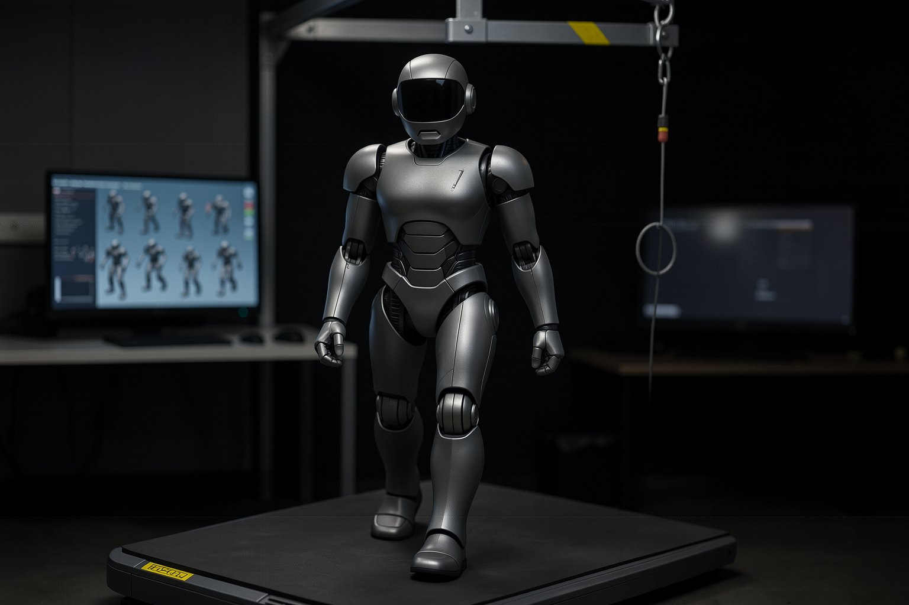
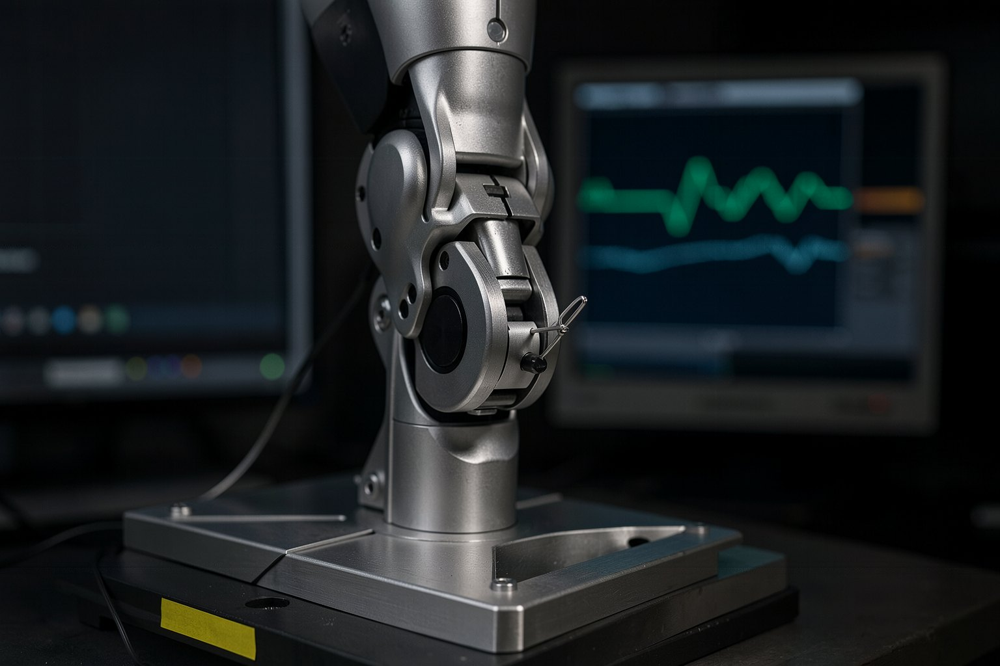

FTH — Formación Tecnológica en Humanoides · curso 1 de 5 · 8 clases
Enseñar a caminar: locomoción por RL en simulación
El Unitree G1 camina porque una política aprendida envía 29 objetivos de articulación cada 20 ms. En ocho clases ejecutas una política lista, ajustas el PD, armas el entorno, lees la recompensa término a término, entrenas PPO en CPU, lees las curvas, evalúas con empujón y escribes tu plan de entrenamiento.

- 8clases
- 128minutos de clase
- 24ejercicios con "listo cuando"
- 20/20episodios de pie con empujón (política lista)
Las clases
De la política lista a tu plan de entrenamiento: PD en las articulaciones, entorno, recompensa, PPO, curvas, evaluación y currículo de terreno.
 Clase 1 · 16 minPor qué la locomoción pasó a ser RLEl Unitree G1 de este curso camina porque una red neuronal envía 29 objetivos de articulación cada 20 ms. En esta clase armas el banco de trabajo, ejecutas la política de marcha lista del Unitree G1 en MuJoCo, ves al mismo robot caer sin ella y entiendes por qué el control clásico dio paso al RL en simulación masiva.
Clase 1 · 16 minPor qué la locomoción pasó a ser RLEl Unitree G1 de este curso camina porque una red neuronal envía 29 objetivos de articulación cada 20 ms. En esta clase armas el banco de trabajo, ejecutas la política de marcha lista del Unitree G1 en MuJoCo, ves al mismo robot caer sin ella y entiendes por qué el control clásico dio paso al RL en simulación masiva.
Clase 2 · 16 minLa capa de abajo: control PD en las articulacionesEntre la política y el motor hay un controlador PD por articulación, con kp y kd elegidos en el entrenamiento. En esta clase mides la respuesta de una rodilla a un escalón con tres valores de kd, dejas al G1 de pie solo con el PD y descubres por qué los ganancias de la política, por sí solos, no sostienen al robot. Clase 3 · 16 minObservación, acción, recompensa y fin de episodioAntes de entrenar, el problema tiene que convertirse en un entorno: qué ve la policy, qué envía, cuánto gana y cuándo termina el episodio. En esta clase lees las cuatro partes en el formato "manager-based" de Isaac Lab y mjlab, en una versión mínima en MuJoCo puro, y ejecutas un episodio con tres policies distintas.
Clase 3 · 16 minObservación, acción, recompensa y fin de episodioAntes de entrenar, el problema tiene que convertirse en un entorno: qué ve la policy, qué envía, cuánto gana y cuándo termina el episodio. En esta clase lees las cuatro partes en el formato "manager-based" de Isaac Lab y mjlab, en una versión mínima en MuJoCo puro, y ejecutas un episodio con tres policies distintas. Clase 4 · 16 minDiseñar la recompensa de marchaLa política aprende lo que la recompensa paga, no lo que tú quisiste decir. En esta clase lees los términos de marcha de la tarea de velocidad de mjlab, grabas un rollout caminando y otro parado, mides cuánto pagó cada término y descubres que, con un peso cambiado, quedarse parado pasa a valer más que caminar.
Clase 4 · 16 minDiseñar la recompensa de marchaLa política aprende lo que la recompensa paga, no lo que tú quisiste decir. En esta clase lees los términos de marcha de la tarea de velocidad de mjlab, grabas un rollout caminando y otro parado, mides cuánto pagó cada término y descubres que, con un peso cambiado, quedarse parado pasa a valer más que caminar. Clase 5 · 16 minPPO con miles de robots en paraleloEl algoritmo que entrena casi toda marcha de humanoide hoy es el PPO, que corre miles de copias del robot en la GPU. En esta clase entiendes el ciclo recolectar, estimar y actualizar, ejecutas un PPO de ~120 líneas con los valores de mjlab en CPU, con 16 robots, y ves el comando que hace lo mismo con 4.096.
Clase 5 · 16 minPPO con miles de robots en paraleloEl algoritmo que entrena casi toda marcha de humanoide hoy es el PPO, que corre miles de copias del robot en la GPU. En esta clase entiendes el ciclo recolectar, estimar y actualizar, ejecutas un PPO de ~120 líneas con los valores de mjlab en CPU, con 16 robots, y ves el comando que hace lo mismo con 4.096. Clase 6 · 16 minLeer el entrenamiento: curvas, colapso y recompensa hackeada (reward hacking)Una curva de recompensa que sube no significa que el robot aprendió a caminar. En esta clase lees el log de tu entrenamiento y el de dos entrenamientos reales de 150 iteraciones, grabados para el curso: en uno la recompensa sube porque el robot aprendió a caer más temprano. El otro muestra el arreglo y el límite del arreglo.
Clase 6 · 16 minLeer el entrenamiento: curvas, colapso y recompensa hackeada (reward hacking)Una curva de recompensa que sube no significa que el robot aprendió a caminar. En esta clase lees el log de tu entrenamiento y el de dos entrenamientos reales de 150 iteraciones, grabados para el curso: en uno la recompensa sube porque el robot aprendió a caer más temprano. El otro muestra el arreglo y el límite del arreglo. Clase 7 · 16 minEvaluar de verdad: velocidad, giro y empujónUna policy solo está lista cuando pasa una prueba que escribiste antes de mirar el resultado. En esta clase evalúas la policy lista en 20 episodios con semillas fijas: error de velocidad, giro y empujón de 1,0, 1,5 y 2,0 m/s. Después pasas tu checkpoint de la clase 5 por la misma prueba.
Clase 7 · 16 minEvaluar de verdad: velocidad, giro y empujónUna policy solo está lista cuando pasa una prueba que escribiste antes de mirar el resultado. En esta clase evalúas la policy lista en 20 episodios con semillas fijas: error de velocidad, giro y empujón de 1,0, 1,5 y 2,0 m/s. Después pasas tu checkpoint de la clase 5 por la misma prueba. Clase 8 · 16 minCurrículo de terreno y tu plan de entrenamientoNadie entrena la marcha en escaleras el primer día: el terreno y la velocidad pedida crecen conforme la política acierta. En esta clase mides hasta qué nivel llega la política lista, lees cómo mjlab y unitree_rl_lab suben de nivel, y escribes tu plan de entrenamiento en un archivo que un script revisa.
Clase 8 · 16 minCurrículo de terreno y tu plan de entrenamientoNadie entrena la marcha en escaleras el primer día: el terreno y la velocidad pedida crecen conforme la política acierta. En esta clase mides hasta qué nivel llega la política lista, lees cómo mjlab y unitree_rl_lab suben de nivel, y escribes tu plan de entrenamiento en un archivo que un script revisa.
Para quién es
- 1Quien programa en Python, ya vio ROS 2 (o hizo el curso robot) y quiere entender cómo aprende a caminar un humanoide.
- 2Quien no tiene humanoide ni GPU: todas las prácticas corren en CPU, en minutos, en MuJoCo.
- 3Quien hizo el curso 0 (banco de trabajo ~/fth): este curso reutiliza el venv y el Menagerie.
Lo que sales haciendo
- 1Ejecutar la política de marcha del G1 en MuJoCo y medir lo que hace.
- 2Leer cada término de la recompensa de marcha en un rollout grabado y predecir el efecto de un peso.
- 3Entrenar PPO en CPU, leer las curvas y reconocer la recompensa hackeada (reward hacking).
- 4Evaluar con empujón y nivel, y escribir un plan de entrenamiento que un script verifica.